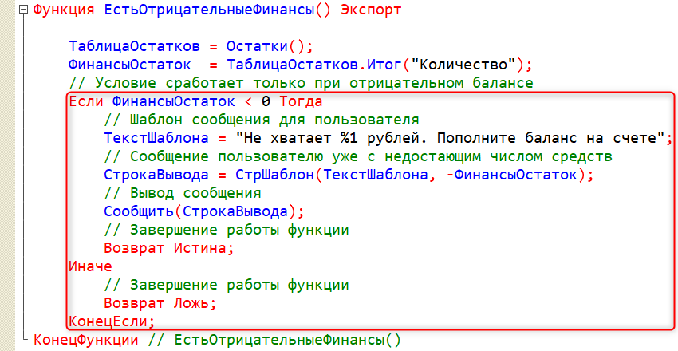

Тема занятия – реализация учета финансов в системе. Для создания системы учета потребуется выполнить 4 задачи:
В реальной жизни невозможно что-то купить без денег. В текущей игре также необходимо реализовать механизм, который будет проверять, хватает ли у игрока денег на покупку товара или апгрейда.
Основная идея заключается в том, что игроку необходимо зарабатывать деньги на апгрейд, а потом уже покупать его. Благодаря улучшениям в магазине игрок будет зарабатывать больше. Сейчас бюджета нет, поэтому игрок может покупать все подряд.
Приступим к выполнению первой задачи. Для того чтобы реализовать учет финансов, необходимо добавить новый регистр накопления. Имя регистра – "ОстаткиДенег", вид регистра – "Остатки" (рис. 13.1).
Рис. 13.1. Добавление регистра "ОстаткиДенег"
Перейдем на вкладку "Данные", чтобы определить структуру регистра.
Добавим ресурс "Количество". Тип данных – "число", длина – 10, точность – 0, неотрицательное (рис. 13.2).
Рис. 13.2. Добавление ресурса "Количество"
"Неотрицательное" означает запрет на внесение в регистр записей со знаком минус. Однако это не означает, что у игрока не будет возможности брать деньги в долг.
Данная галочка означает, что игрок не сможет либо получить -100 денег, либо потратить -100 денег. Галочка отвечает только за это. Контроль остатков денег будет реализован программно.
Далее решим вторую задачу и укажем, с помощью каких документов регистрируются записи в регистре накопления.
На вкладке "Регистраторы" поставим галочку напротив всех документов, ведь при покупке и продаже товаров, а также приобретении апгрейдов необходимы деньги (рис. 13.3).
Рис. 13.3. Выбор регистраторов
Определим логику записи данных из документов в регистр накопления. Начнем с документа "Покупка товаров".
В окне редактирования документа на вкладке "Движения" необходимо нажать на кнопку "Конструктор движений" (рис. 13.4).
Рис. 13.4. Открытие конструктора движений
На вопрос о замещении процедуры отвечаем "Да" и переходим в конструктор движений.
Добавим правила движения информации в еще один регистр. Для этого в верхней левой части конструктора нажмем "Добавить" и выберем регистр "ОстаткиДенег" (рис. 13.5).
Рис. 13.5. Добавление регистра в конструкторе движений
Поскольку при покупке товаров деньги тратятся, ставим тип движения "Расход". "Количество" – это ресурс, который отвечает за остатки денег, поэтому в качестве выражения выбираем реквизит "ИтоговаяСумма" и нажимаем "Ок" (рис. 13.6).
Рис. 13.6. Настройка движения
В результате процедура "ОбработкаПроведения" изменилась, появилась новая часть кода, отвечающая за движение денежных средств.
Так как данный документ отвечает за покупку товаров, необходимо реализовать механизм контроля остатков, благодаря которому игрок не сможет купить товаров на сумму большую, чем у него есть в виртуальном кошельке.
С точки зрения системы необходимо реализовать отказ записи в подобном случае. В дальнейшем потребуется определить контроль отказа проведения документа.
Для этого воспользуемся стандартным параметром "Отказ", который отвечает за возможность проведения документа. Аналогичный контроль будет реализован в документе "ПриобретениеАпгрейда". Данный механизм реализуем позже.
Перейдем к документу "ЗаказКлиента" и откроем "Конструктор движений" (рис. 13.7). На вопрос о замещении процедуры отвечаем "Да" и переходим в конструктор движений.
Добавим еще один регистр в верхней левой части конструктора. Выбираем регистр "ОстаткиДенег" (рис. 13.8).
Рис. 13.7. Открытие конструктора движений |
Рис. 13.8. Добавление регистра в конструкторе движений |
Поскольку при продаже товаров деньги появляются, ставим тип движения "Приход". "Количество" – это ресурс, который отвечает за остатки денег, поэтому в качестве выражения выбираем реквизит "ИтоговаяСумма" и нажимаем "Ок" (рис. 13.9).
Рис. 13.9. Настройка движения
В итоге наблюдаем аналогичную картину, как и в прошлом документе.
Реализуем движение для третьего документа.
Перейдем к документу "ПриобретениеАпгрейда" и откроем "Конструктор движений" (рис. 13.10). На вопрос о замещении процедуры отвечаем "Да" и переходим в конструктор движений. Добавим регистр в верхней левой части конструктора. Выбираем регистр "ОстаткиДенег" (рис. 13.11).
Рис. 13.10. Открытие конструктора движений |
Рис. 13.11. Добавление регистра в конструкторе движений |
При покупке апгрейдов деньги убывают – ставим тип движения "Расход". В данном случае в документе отсутствует реквизит, подходящий для учета денежных средств. Но реквизит "Апгрейд" имеет ссылочный тип данных, поэтому через него можно обратиться к цене апгрейда, используя оператор разыменования (точка).
Обращение можно сделать прямо в поле выражения. После этого нажимаем "ОК" (рис. 13.12).
Рис. 13.12. Настройка движения
Таким образом, движение по количеству денег с видом движения "Расход" происходит через обращение "Апгрейд.Цена".
Вызов процедуры "ПроверкаПокупки" остался, поскольку она вынесена за пределы конструктора. Если она исчезла, то ее необходимо вернуть.
В данном документе также необходимо осуществлять контроль возможности проведения документа, – это будет наша третья задача.
Воспользуемся следующим методом: после проведения документа будем сверять значение остатков денежных средств. Если значение будет отрицательным, тогда проведение документа будет отменяться.
В системе уже реализован необходимый механизм.
В строке "Движения.ОстаткиДенег.Записывать = Истина" истина отвечает за осуществление записи в регистр в конце процедуры. Если до записи в регистр проверить значения, которые в него записываются, и убедиться, что они не подходят, то всю запись можно отменить и отправить пользователю сообщение о нехватке денег. |
Данная логика должна работать как в документе "Приобретение апгрейда", так и в документе "Покупка товаров". Имеет смысл реализовать контроль один раз, чтобы не копировать код в разные модули.
Работа алгоритма проверки связана с регистром накопления "ОстаткиДенег", поэтому необходимо реализовать ее в данном регистре.
Откроем окно редактирования регистра накопления "ОстаткиДенег", перейдем на вкладку "Прочее" и откроем "Модуль менеджера" (рис. 13.13).
Рис. 13.13. Открытие модуля менеджера
В модуле менеджера определим функцию, поскольку функция позволит нам давать ответы в документы – отменять записи или оставлять. Имя функции – "ЕстьОтрицательныеФинансы". Функция должна быть экспортной, поскольку она будет вызываться из модулей объекта двух документов.
Для получения остатков по всей таблице необходимо обратиться к виртуальной таблице, а не к физической.
Однако благодаря тому, что код пишется в модуле менеджера регистра накопления "ОстаткиДенег", можно убрать часть кода, обращающуюся к регистру, и оставить только вызов виртуальной таблицы "Остатки".
Запишем эту таблицу в переменную "ТаблицаОстатков" и вычислим остатки финансов, подведя числовой итог по одной колонке "Количество".
Реализуем проверку остатков денежных средств, чтобы пользователь не вышел за пределы бюджета.

Реализуем вызов данной функции в документах "ПокупкаТовара" и "ПриобретениеАпгрейда".
Откроем модуль объекта документа "ПокупкаТовара" и искусственно совершим запись данных в регистр. Это нужно для того, чтобы к моменту проверки отрицательного бюджета в регистре уже были отрицательные остатки. После чего присвоим параметру "Отказ" результат работы созданной ранее функции.
Аналогично используем функцию в документе "ПриобретениеАпгрейда". Для удобства можно скопировать код и вставить его в модуле объекта другого документа. Скопированный код вставляется также после записи движения данных конструктором.
Четвертая задача, которую необходимо выполнить, – это вывод текущего бюджета игрока на начальном экране.
Для этого перейдем на форму "НачальнаяСтраница" и добавим реквизит формы для хранения бюджета. Имя реквизита – "Бюджет", тип данных – "число", длина – 10, точность – 0, неотрицательное (рис. 13.14).
Рис. 13.14. Создание реквизита формы "Бюджет"
Перенесем новый реквизит в группу "ПунктУправления". Также изменим порядок расположения элементов в группе: "Директор", "Рейтинг" и "Бюджет". Сделать это можно с помощью панели навигации (рис. 13.15).
Рис. 13.15. Добавление реквизита формы в группу
Изменим вид поля "Бюджет" на "Поле надписи" (рис. 13.16).
Рис. 13.16. Изменение вида поля "Бюджет"
Для улучшения отображения данных в полях "Бюджет" и "Рейтинг" изменим свойство "ГоризонтальноеПоложение" на "Лево" в палитре свойств на вкладке "Расположение" (рис. 13.17).
Рис. 13.17. Изменение горизонтального положения полей "Рейтинг" и "Бюджет"
Расчет бюджета игрока будет происходить в модуле формы. Однако его значение необходимо где-то хранить.
Создадим константу "Баланс", тип данных – "число", длина – 10, точность – 0, неотрицательное (рис. 13.18).
Рис. 13.18. Создание константы "Баланс"
Данная константа будет хранить начальный бюджет игрока и обновляться с каждой проведенной финансовой операцией. Обновление константы будет происходить на форме начальной страницы путем вычисления остатков из регистра накопления. Информация будет записываться как в реквизит формы для отображения игроку, так и в константу.
Перейдем в модуль формы "НачальнаяСтраница" и в обработчике "ОбновитьДанныеИгрока" добавим следующие строки:
Обновим конфигурацию и запустим пользовательский режим.
На форме начального экрана значение бюджета пустое. Это произошло из-за того, что в регистре накопления "ОстаткиДенег" еще нет ни одной записи (рис. 13.19).
Рис. 13.19. Форма начального экрана
Для чистоты эксперимента можно удалить все записи и создать их заново. Но можно просто перепровести все документы.
Для начала перепроведем все заказы клиентов. Выделим все документы в списке, нажатием по ним правой кнопки мыши выберем "Провести" (рис. 13.20).
Рис. 13.20. Перепроведение заказов клиентов
При возврате на начальный экран мы обнаружим, что бюджет не обновился. Дело в том, что процедура "ОбновитьДанныеИгрока" срабатывает только при запуске пользовательского режима.
Перезапустим пользовательский режим (рис. 13.21).
Рис. 13.21. Начальная страница с обновленным бюджетом
Для того чтобы бюджет обновлялся при проведении документов, определим на форме каждого из них событие "ПриЗакрытии", которое будет вызывать оповещение "ОбновитьНачальныйЭкран".
Скопируем из модуля формы документа "ПриобретениеАпгрейда" обработчик события "ПриЗакрытии" (рис. 13.22).
Рис. 13.22. Копирование обработчика события
Перейдем в редактор формы документа "ЗаказКлиента" и вставим скопированный обработчик в модуль этой формы. Но если прямо сейчас запустить пользовательский режим, то данная процедура не сработает, поскольку она не связана с событием формы.
Откроем палитру свойств формы документа "ЗаказКлиента" и на вкладке "События" свяжем обработчик и событие (рис. 13.23).
Рис. 13.23. Настройка связи события и обработчика
В модуле формы документа "ПокупкаТоваров" создадим новую область "ОбработчикиСобытийФормы" и вставим в нее процедуру "ПриЗакрытии".
Аналогично с предыдущим документом, свяжем процедуру с событием (рис. 13.24).
Рис. 13.24. Настройка связи события и обработчика
Обновим конфигурацию базы данных и запустим пользовательский режим.
Перепроведем покупку апгрейда "Один кассир" (рис. 13.25).
Рис. 13.25. Повторная покупка апгрейда
Вернемся на начальный экран (рис. 13.26).
Рис.13.26. Начальный экран с измененным бюджетом
В результате бюджет игрока уменьшился на 100 рублей.
Если сейчас перепровести все документы, то бюджет составит 970, но лучше всего удалить все записи и зафиксировать их все заново (рис. 13.27 – 13.30).
Рис. 13.27. Удаление записей документа "Приобретение апгрейда"
Рис. 13.28. Удаление записей бизнес-процесса
Рис. 13.29. Удаление записей документа "Заказ клиента
Рис. 13.30. Удаление записей документа "Покупка товара"
После очистки записей перезапустим пользовательский режим и попробуем приобрести апгрейд. Система сообщит игроку, что на балансе недостаточно средств (рис. 13.31).
Рис. 13.31. Ошибка при попытке купить апгрейд
На этом тринадцатое занятие окончено!
На этом занятии мы реализовали контроль финансового состояния игрока. Теперь игрок сможет купить товар или апгрейд только в том случае, если у него будет достаточно средств.
На следующем занятии рассмотрим механизм начисления стартового капитала.
Это нужно запомнить |
|
Данные из документа в регистр записываются только при проведении документа. То есть когда действие, которое фиксирует этот документ, действительно произошло. В строке "Движения.ОстаткиДенег.Записывать = Истина" истина отвечает за осуществление записи в регистр в конце процедуры. Если до записи в регистр проверить значения, которые в него записываются, и убедиться, что они не подходят, то всю запись можно отменить и отправить пользователю сообщение о нехватке денег. Экспортные процедуры и функции можно вызывать из других модулей. |